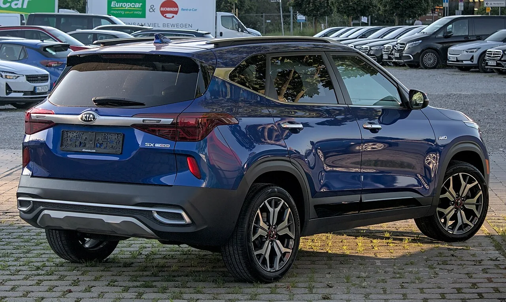

▲ 기아 셀토스(SP3). 2025년 12월~2026년 6월 생산분 중 일부가 무상수리 대상이다 ⓒ 기아
기아 셀토스(SP3) 소유주라면 최근 저속 주행 중 미묘한 울컥거림을 느낀 적이 있을 수 있다. 이 증상이 특정 생산 기간에 해당한다면, 정비소에 돈을 내기 전에 먼저 확인해볼 것이 있다. 리콜(결함시정)은 아니지만, 기아가 무상으로 처리해주는 무상수리(서비스 캠페인) 대상일 수 있기 때문이다.
1. 어떤 증상이 대상인가

▲ 기아 셀토스 SP3 후면. 저속 서행 중 울컥거림이 대표적인 대상 증상이다 ⓒ 기아
이번 무상수리의 대상 증상은 크게 세 가지다. 첫째는 저속으로 서행할 때 차량이 미묘하게 울컥거리는 느낌이다. 둘째는 주차 시 빌트인 캠 화면이 표시되지 않는 증상이다. 셋째는 OTA(무선) 소프트웨어 업데이트가 간헐적으로 실패하는 경우다. 세 증상 모두 안전과 직결되는 결함이라기보다는 소프트웨어·제어 로직 관련 품질 이슈에 가깝다.
2. 대상 — 약 6개월 생산분, 1만 1,176대

▲ 기아 셀토스 X-Line. 2025년 12월 31일부터 2026년 6월 17일 사이 생산된 물량이 무상수리 대상이다 ⓒ 기아
대상은 2025년 12월 31일부터 2026년 6월 17일 사이에 생산된 셀토스(SP3) 총 1만 1,176대다. 이 기간 생산분에서 공통적으로 특정 제어기(TCU 등)의 소프트웨어 로직에 개선이 필요한 부분이 발견된 것으로 보인다.
3. 리콜이 아니라 '무상수리'인 이유
이번 조치는 국토교통부가 공표하는 '리콜(결함시정)'이 아니라 제조사가 자체적으로 운영하는 무상수리(서비스 캠페인)다. 리콜은 안전에 직접 영향을 주는 결함에 대해 정부에 신고하고 시정하는 절차인 반면, 무상수리는 안전과 직결되지는 않지만 품질 개선이 필요한 사안에 대해 제조사가 비용 부담 없이 처리해주는 제도다. 소비자 입장에서는 명칭 차이보다 '내 차가 대상인지, 무상으로 고칠 수 있는지'가 중요하다.
4. 대상 확인 및 예약 방법

▲ 기아 셀토스. 대상 여부는 차대번호로 손쉽게 확인할 수 있다 ⓒ 기아
본인 차량이 대상인지는 기아 공식 사이트에서 차대번호로 확인할 수 있다.
기아 리콜/무상수리 조회 바로가기대상으로 확인되면 가까운 서비스센터(Auto Q 등)에 사전 예약 후 입고하는 것이 권장된다. 예약 없이 방문할 경우 대기 시간이 길어질 수 있다.
5. 정리
체크포인트
- 2025년 12월 31일~2026년 6월 17일 생산된 셀토스 1만 1,176대가 대상이다.
- 저속 울컥거림·빌트인캠 미표시·OTA 업데이트 실패 중 하나라도 겪었다면 확인해보자.
- 이는 리콜이 아닌 무상수리이지만 비용은 동일하게 무료다.
- update.kia.com에서 차대번호로 대상 여부를 먼저 확인하고 예약 후 방문하자.